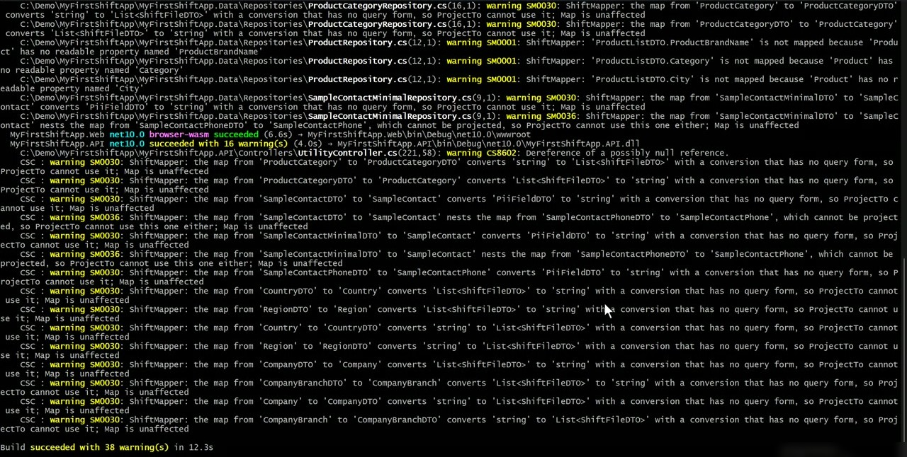
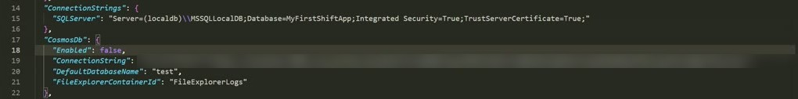
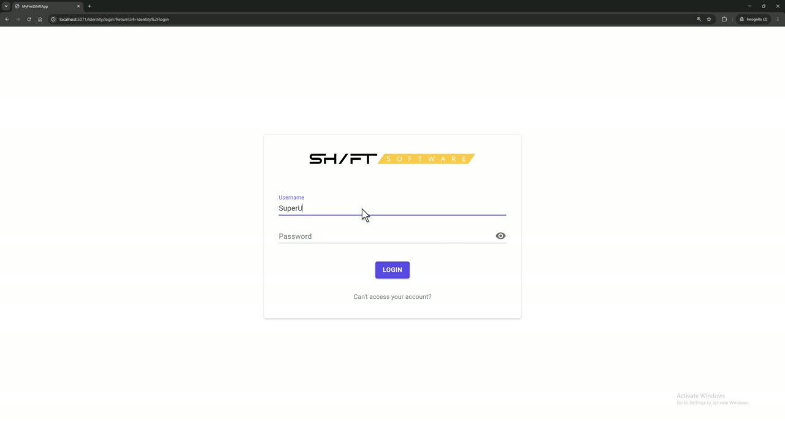
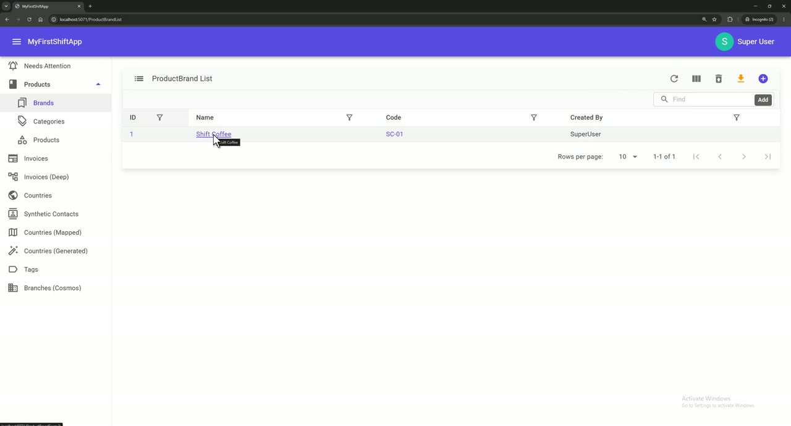

Pull requests
Eleven pull requests to Shift Software repos. None is merged yet. Every day of the work is in my work log.
Map Vehicle automatically through ShiftMapper
Removes Vehicle's four hand-written mapping methods; the write map keeps the audit fields server-owned.
Car with its own TypeAuth action
Tests that the API itself answers 403 when a user without Read, Write or Delete access tries those actions.
Side-by-side form samples
Two legacy forms on one page share one record and can save it under the wrong key; the samples show the bug and the fix.
Demo ShiftBanners in the sample
Rule-driven banners in the sample app. Waits for ShiftBlazor #3.
Make the template build without the sample and with external identity
Fixed the two template bugs below. Closed because the team fixed them upstream first.
ShiftBanners: banners from a rules file
Warning banners chosen per page, permission and language from a JSON file, with no code change per banner.
ShiftEntityForm page (Draft)
How the form loads, saves and deletes a record, its modes, permissions and context, checked against the source.
Concurrency guide (Draft)
What the LastSaveDate check does and doesn't do, built on the three Week 3 incidents, with a resumable sync recipe.
Get Started pages to Reviewed
The six pages on this page. They show as Draft on docs.shift.software until this PR is merged.
CONTRIBUTING.md
How to add a docs page and verify it: page metadata, snippets, Docs.Verify scripts, page status and TestedAgainst.
Re-verify Data-level access on 2026.10.15.1
The guide still holds on the current release. Its check script's published-packages mode was broken by a template change; it now runs the test in a freshly generated project.
Documentation pages
All of them are in open pull requests, so they aren't on docs.shift.software yet.
- ShiftEntityForm (Components, Draft): Docs #1
- Concurrency in Shift Framework (Guides, Draft): Docs #2
- Get Started, six pages: Reviewed in Docs #3 (open)
- CONTRIBUTING.md (how to add and verify a page): Docs #4
From an empty folder to a running app
Following the Get Started pages exactly: install check, scaffold the project, build, point it at LocalDB, create the database, run it, sign in and save a record.
Transcript (the video has no voice; these are its captions)
- Shift Framework - Get Started: from an empty folder to a running app
- 1. The .NET 10 SDK is installed
- 2. The Shift Framework templates are installed (release 2026.10.10.2)
- 3. Create a project: sample app + identity server hosted inside the app
- 4. Build: 0 errors (the ShiftMapper warnings are expected)
- 5. Open the API settings to point the app at a database
- 6. Use LocalDB. In JSON the backslash must be written twice
- 7. No Cosmos DB emulator on this machine, so switch Cosmos DB off
- 8. The template ships without migrations, so create the first one
- 9. Create the database and all the tables
- 10. Run the API project. It also serves the Blazor web app
- 11. Open the app (the port is random for every project: 5071)
- 12. Sign in with the seeded admin user: SuperUser / OneTwo
- 13. Products > Brands: the sample app's brand list
- 14. Add a brand
- 15. "Item has been Created": saved to the database
- Every step is checked by a Docs.Verify script. Six Get Started pages: Reviewed in Docs PR #3 (open)




How a page is checked
The commands live in a script, the script runs end to end, and the page displays the exact text of the script.
Script
A bash script in Docs.Verify/Scripts runs every command from the page in a clean folder and checks the result: files, builds, ports, database rows, HTTP responses.
Snippet
Docs.SnippetGen cuts marked regions out of the scripts at build time and warns when a page was tested against an older release.
Page
The page renders the snippet, not hand-typed text, and carries a Reviewed chip with the release it was last verified against.
What checking each page found
What is Shift Framework?
- Fact-checked against a fresh project and the framework repos.
- Wrong DTO convention: the page said View / List / Upsert; projects actually use a form DTO and a list DTO.
- ShiftMapper was missing, although every generated project uses it.
Installation
- Visual Studio requirement updated to 2026 for .NET 10.
- "A clean build" → 0 errors, plus a note that a fresh project shows a few dozen expected ShiftMapper warnings.
- A "next page" link pointed to the wrong page; the upgrade tip was clarified.
Template parameters
- Builds every combination of the two required parameters, and found three of four that didn't build, from two bugs (see below).
- Identity URL defaults and the file they land in were wrong on the page.
--addTestuses a real SQL Server Express database, not an in-memory one.
Project tour
- The architecture diagram showed a simple stack; the real project references are different (the API hosts the web app).
- Permission checks happen in the endpoints, not the repository; the request walkthrough was rewritten for the real code.
- Updated again for 2026.10.12.1, which no longer generates two folders the page described.
Run the generated sample
- A new project has Cosmos DB switched on: without the emulator it prints red errors. New section shows how to switch it off.
- Removed a claim that the app checks migrations on start (nothing does).
- The port is random per project, and the troubleshooting error message now matches the real one.
Your first entity
- The tutorial's first command failed: the sample already has a
Vehicle. The tutorial now builds aWarehouse. - The generator creates 8 files, not 9, and its form starts empty. Added a step for form fields and list columns.
- The script scaffolds, migrates, signs in and saves a record through the API, then cleans up after itself.
Bugs found while checking the pages
Two template bugs: three of four combinations didn't build
| Combination | 2026.10.10.2 | 2026.10.15.1 |
|---|---|---|
| sample + Internal (default) | builds | builds |
| no sample + Internal | CS0103 | builds |
| sample + External | CS0234 | builds |
| no sample + External | CS0234 | builds |
Two causes: without the sample, the menu (Shared/NavMenu.razor) still referred to
ShiftIdentityActions, which wasn't there (CS0103); with External identity, a development
page used the identity dashboard's layout, which External doesn't reference (CS0234). I sent a fix in
ShiftTemplates #13, which was
closed because the team fixed it upstream first. All four combinations were rebuilt on both
releases on 19 October, and the Template parameters script now requires them to build.
A tutorial that couldn't run as written
"Your first entity" told readers to generate a Vehicle, but the sample app already has one,
so the command stops with "Creating this template will make changes to existing files".
The old check script hid this by deleting the sample's files before running.
The tutorial now uses a new Warehouse entity, and the script proves the whole path:
generate, add fields, migrate, sign in, create a warehouse through the API and see it in the list.
Incidents I reproduced
Three production incidents rebuilt in the StockPlusPlus sample, each proven by tests against SQL Server. They live on evidence branches in my fork, not in pull requests. Updated after my mentor's review on 20 October; every fix below has a run before it and a run after it.
A long sync that gets cancelled
A 10,000-row sync failed with "Operation cancelled by user", and every retry started again from zero, because everything was one transaction. The fix commits batches together with their progress. A cancel stops the run between batches and never cuts a batch's write short. Rows are read with a keyset cursor, and only errors a retry can never fix mark a row Failed.
Cancel as batch 2 starts saving (batches of 2,500): Expected: 5000 Actual: 2500 The batch was saved with the caller's token, so the cancel threw it away.
Batch 2 kept: Cancelled, 5,000 done, 5,000 left; the next run finishes. One row that keeps failing, read 3 ways: first-pending loop: 50-batch cap hit OFFSET: ends, 500 rows never read keyset: 10 batches, 1 row left 10 / 10 tests, three runs in a row
Commits · cancel run · errors and paging · template before / after · naive endpoint removed
The silent overwrite
Four weaknesses of the LastSaveDate conflict check, one diagnosis test each. These tests pass
by showing the flaw; this task has no fix. The review found two tests that didn't prove what they claimed,
so each test now also fails when its premise is removed.
Old "child save moves the parent's stamp" test, line change deleted: Passed It was showing weakness 1 (every PUT re-stamps the root), not weakness 2.
Child save + parent total: 409 Child only (control): stamp unchanged Mutations, each must fail: no line change Failed A's save removed Failed 7 / 7 tests, three runs in a row
A stale stamp after a nested save
An action cancelled an order line and recalculated the total. The user's next edit always got a 409, though nobody else had touched the order. The fix: the action answers with the order as it now is, and the form takes that version. The conflict check stays strict.
Action answering 204 No Content:
next edit succeeds Failed
Expected 200, got 204
someone else's edit Failed
Expected 200, got 204API: 3 / 3 tests (SQL Server) Blazor (new): the form takes the answer, its next save sends the new stamp; fails if the page ignores the answer
Writing the Blazor test showed my first note was wrong: the form can take a new value through
@bind-Value, so rebuilding it was unnecessary. The page and the concurrency guide (Docs #2) are corrected.
Week 4
Next steps
- Run the Docs.Verify scripts in CI on every docs pull request, so the pages are re-checked automatically instead of by hand.
- Close the last Week 1 friction item: the entity scaffold doesn't add a menu link, and Your first entity doesn't say so yet.
- Structured conflict handling (Week 4's Flagship A): a 409 that says which fields collided, and a merge dialog in the form, for the weaknesses the Week 3 incidents showed.
- Finish the open pull requests through review until they're merged or closed.